분포 (Distribution) — 난수를 '어떤 모양으로' 뽑나
균등분포 uniform
정해진 범위에서 모든 값이 똑같은 확률
주사위처럼 공평. 범위(low~high)가 정해져 있고 그 안은 평평. 범위 밖은 절대 안 나옴.
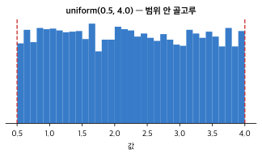
예시 rng.uniform(0.5, 4.0, size=G) → 0.5~4.0 사이 골고루
코드 인자: low(최소), high(최대), size(개수)
정규분포 normal
평균 중심 종 모양 (가운데 자주, 멀수록 드묾)
사람 키처럼 평균 근처가 대부분. 범위 제한 없음(아주 크거나 작은 값도 드물게 가능).
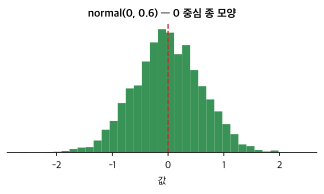
예시 rng.normal(0, 0.6, size=(2,G)) → 0 중심, 대부분 ±0.6 안
코드 인자: mean(평균=중심), std(표준편차=퍼짐), size(모양)
통계 요약값 — 데이터를 숫자 하나로
평균 mean
값들을 다 더해 개수로 나눈 '중심'
가장 흔한 요약. .mean()으로 계산. 축(axis)을 주면 특정 방향으로만 평균.
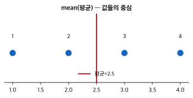
예시 [1,2,3,4].mean() = 2.5
코드 arr.mean(0) = 행(세포) 방향 평균 → 열(유전자)별 평균
표준편차 std
값들이 평균에서 얼마나 퍼져 있나
작으면 촘촘, 크면 넓게 흩어짐. 정규분포의 두 번째 인자가 이것.
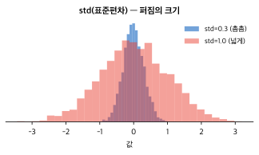
예시 [1,2,3,4].std() ≈ 1.12
코드 normal의 std=0.6 → 대부분 ±0.6 안에
선형대수 — 벡터·행렬 연산
행렬곱 @
두 배열을 '곱해 합치는' 연산 (matrix multiply)
각 원소를 곱해 더함. 신경망·회귀의 핵심 연산. (a,b)@(b,c)=(a,c) — 안쪽 차원이 맞아야 함.
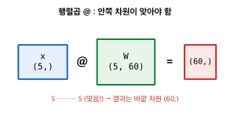
예시 x(5,) @ W(5,60) → (60,) 벡터
코드 예측 x @ W: 설명자에 규칙 W 적용
최소제곱 lstsq
'예측이 정답에 최대한 가깝게'인 규칙을 한 번에 계산
least squares. X @ W ≈ Y 가 되는 W를 오차 제곱합이 최소가 되도록 품. 선형회귀의 해.
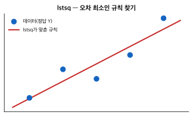
예시 W, *_ = lstsq(X_, Y) → W가 배운 규칙
코드 fit_predict_B의 학습 부분
차원 & 행렬곱 상세 — 자주 헷갈리는 것
차원 (ndim) — (3,) vs (3,1)
shape 괄호 안 숫자 '개수' = 차원 수
(3,)=숫자 1개→1차원 벡터(행/열 없음, 대괄호 한 겹). (3,1)=숫자 2개→2차원 행렬(3행 1열, 대괄호 두 겹). 값이 같아도 차원이 다르면 별개.
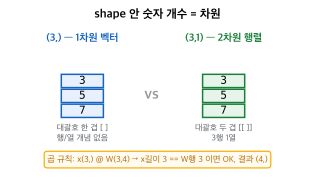
예시 np.array([3,5,7]).shape = (3,) · np.array([[3],[5],[7]]).shape = (3,1)
코드 arr.ndim = 차원 수 (괄호 안 숫자 개수와 같음)
행렬곱 @ — 무엇을 곱해 더하나
x의 각 값 × W의 한 세로줄 → 짝끼리 곱해 더함, 열마다 반복
out[j] = (x의 값들) · (W의 j번 열). (m×k)@(k×n)=(m×n): 안쪽 k가 맞아야 하고 사라짐, 바깥 m·n만 남음. 1차원 x(k,)@W(k,n)=(n,) — x의 길이가 W의 '행' 개수와 같아야 함.
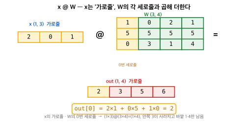
예시 x(3,) @ W(3,4) = (4,) → out[0]=2×1+0×5+1×0=2
코드 x 길이 == W.shape[0](행 개수) 이면 곱 가능
axis=N 규칙 — N번째 축이 사라진다
mean(0)/sum(0) 등에서 축 방향 헷갈릴 때: axis=N 하면 그 N번 축이 없어진다
shape (2700, 13714)에서 mean(axis=0) → 0번 축(2700)이 사라지고 (13714,) 남음 = 세포 방향(↓) 평균 = 유전자별 평균. mean(axis=1) → 1번 축(13714)이 사라지고 (2700,) = 세포별 평균. 우리 ctrl_mean = X.mean(0)이 바로 이것.

예시 [[10,0,2,8],[4,6,0,8],[1,3,4,8]].mean(0) = [5,3,2,8] (각 열=유전자 평균)
코드 X.mean(axis=0) → 유전자별 · X.mean(axis=1) → 세포별
학습(training) 수식 — 모델이 배우는 원리
손실 MSE (Mean Squared Error)
예측이 정답과 얼마나 틀렸나를 숫자 하나로
오차를 제곱해서 평균. 제곱하는 이유는 (1) 부호를 없애고 (2) 큰 오차에 더 큰 벌점을 주기 위해. 수식: L = (1/n) × sum((pred − y)²)
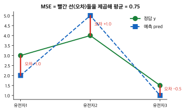
예시 pred=[2,5,1], y=[3,4,1.5] → 오차 [−1,+1,−0.5] → 제곱 [1,1,0.25] → 평균 0.75
코드 loss = ((pred - Y)**2).mean()
기울기 (gradient)
가중치를 어느 방향으로 고쳐야 손실이 줄어드나
손실을 가중치로 미분한 값. 양수면 W를 키울 때 손실이 커진다는 뜻이라 W를 줄여야 함. 수식: dL/dW = 2 × X.T @ (pred − y) / n (수치 미분으로 검증 완료, 차이 3e-11)
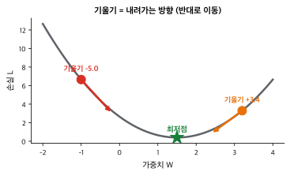
예시 기울기 −5.0 → W를 키우는 방향으로 이동 / 기울기 +3.4 → W를 줄이는 방향
코드 grad = 2 * X.T @ (pred - Y) / (n*g)
수정 규칙 · 학습률 (learning rate)
기울기 반대 방향으로 lr만큼 한 걸음
마이너스 부호가 '기울기 반대 방향'을 뜻함. lr(학습률)은 걸음 크기 — 너무 크면 최저점을 지나쳐 좌우로 튀고, 너무 작으면 느림. 수식: W ← W − lr × dL/dW
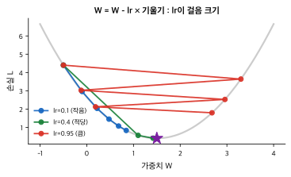
예시 lr=0.4면 5걸음에 최저점 도달 / lr=0.95면 좌우로 튐 / lr=0.1이면 느리게 접근
코드 W = W - lr * grad
ReLU (비선형 활성화)
음수는 0으로, 양수는 그대로 — 이게 있어야 층 쌓기가 의미를 가짐
ReLU가 없으면 층을 아무리 쌓아도 행렬곱끼리 합쳐져(W1@W2) 1층과 수학적으로 완전히 동일. 실제로 확인: ReLU 없는 2층 [−1.669,−0.292] = 합친 1층 [−1.669,−0.292]. ReLU가 '꺾임'을 만들어 곡선·상호작용을 표현. 수식: ReLU(x) = max(0, x)
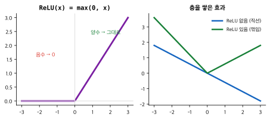
예시 x=[−2,−0.5,0,1,3] → ReLU(x)=[0,0,0,1,3]
코드 nn.ReLU() 또는 np.maximum(0, x)